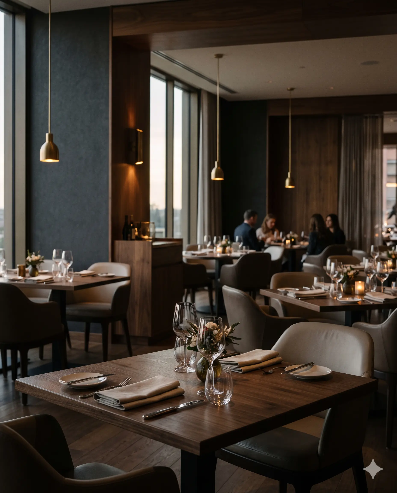

Our story
A kitchen built around one fire.
Oriel is a fictional restaurant created for a portfolio project. The story below is invented, but the way we imagine cooking here is real.
How it began
It started with a hearth.
Oriel began as a supper club in a borrowed warehouse: one oak-fired hearth, one long table and a menu written the morning of each dinner. Guests kept asking when we would open for real.
When we finally found a room of our own, the hearth came first. The dining room was designed around it, so that everyone can see the fire and feel its warmth.
Today the kitchen still cooks the same way: simply, seasonally and with patience.

We don’t write the menu. We listen to the season and cook what it gives us.
What we believe
Three simple ideas.
-
Cook with the season
If it isn’t at its peak, it isn’t on the menu. Dishes arrive and leave with the weather.
-
Buy close to home
We imagine buying from farms, fishers and foragers within a hundred miles, and knowing them by name.
-
Let the fire do the work
Oak and fruitwood add flavor no technique can imitate, so we keep everything else restrained.
The team
The people at the hearth.
Demo Fictional team members created for this portfolio project.
-

Elena Marlowe
Executive Chef & Co-founder
Trained in coastal kitchens and obsessed with smoke. Elena builds each menu around whatever the farms bring in that week.
-

Jonas Whitfield
Pastry Chef
Jonas bakes desserts in the dying heat of the hearth, from burnt Basque cheesecake to roasted fruit.
-

Priya Anand
General Manager
Priya runs the room with a calm that guests feel. She believes a good evening should never feel rushed.
Gallery
Inside Oriel.


Join us
Come and sit by the fire.
See what’s cooking this season, or try the demo reservation form.